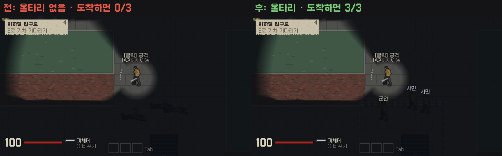
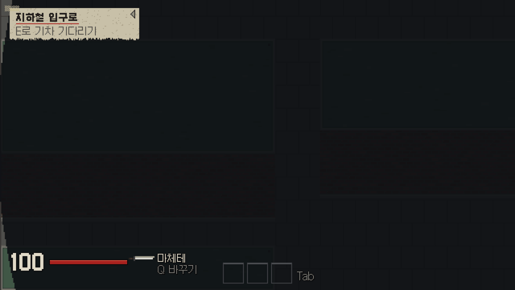

핵 맞은 한국, 서울에서 부산까지 가는 탑뷰 생존 게임을 만들면서 부딪힌 문제와 그때 고른 방법을 남긴다. 기법 이름과, 그 기법이 우리 코드 어디에 있는지도 함께 적는다.
서울
대전
부산
지금: 서울 골목 → 역 디펜스 · 목표는 스테이지 1개 완성
2026-11-18게임 수학카메라
카메라가 컴퓨터마다 다르게 따라온다
유튜브 쇼츠 「게임 카메라에 숨겨진 수학 기법」을 보다가 우리 카메라 코드를 다시 봤다. 카메라는 주인공에게 바로 붙지 않고, 매 프레임 남은 거리의 일정 비율만큼 따라간다. 멀면 빠르게, 가까우면 천천히 다가가서 부드럽게 멈춘다. 이걸 점근적 평균(lerp smoothing)이라고 부른다.
그런데 이 식에는 함정이 있다. 1초에 화면을 몇 번 그리느냐(fps)에 따라 따라오는 속도가 달라진다.
나눈 대화
Claude
60fps 컴퓨터와 30fps 컴퓨터에서, 카메라가 따라오는 속도가 똑같을까요, 다를까요?
나
다를 것 같습니다.
Claude
맞아요. 60fps는 남은 거리의 13.3%를 여러 번, 20fps는 40%를 적게 줄입니다. 조금씩 여러 번 줄이면 줄이는 양 자체가 점점 작아져서, 오히려 느린 컴퓨터가 더 빨리 따라붙어요.
지금 식, 20fps지금 식, 60fpsexp 식 (어떤 fps든 같음)
화면 속도
한 프레임에 줄이는 거리
0.25초 뒤 남은 거리
60fps
13.3%
11.7%
20fps
40.0%
7.8%
exp 식
fps마다 다름
늘 13.5%
핵심 한 가지프레임 독립 감쇠 (exponential decay)
dt * 8 대신 1 - exp(-8 * dt)를 쓰면, 0.1초씩 두 번 줄인 것과 0.2초를 한 번에 줄인 것이 정확히 같아진다. 곱셈으로 이어지는 감소는 지수(exp)로 써야 시간 조각을 어떻게 나눠도 결과가 같다.
우리 게임은 dt를 최대 0.05초(20fps)로 막아 두어서 차이가 크지 않다. 하지만 확대·축소도 같은 식을 쓰고, 앞으로 부드럽게 움직이는 것마다 이 식을 쓸 테니 습관을 바로잡아 두는 게 좋다. 아직 안 고침 · 다음 작업
코드: src/play.py 카메라 따라가기, ease_zoom
2026-11-18AI 감각설계
보는 건 고정, 소리로 조절
F5(시야)와 F6(소리)를 켠 화면. 파란 부채꼴이 "!"가 뜨는 범위, 노란 원이 소리가 닿는 범위.
처음엔 좀보이드를 따라, 주인공이 걸으면 160, 가만히 있거나 살금 걸으면 90 안에서 들키게 했다. 그랬더니 디버그 화면에서 피폭체 시야가 주인공 움직임에 따라 커졌다 작아졌다 해서 헷갈렸다.
나눈 대화
나
움직일 때 들리는 소리로만 해도 괜찮을 것 같은데, 왜 좀비의 시야 범위를 조절하는 거죠? 주인공의 소리 범위만 조절하면 될 것 같아서요.
Claude
맞아요. 은신 하나를 시야와 소리 두 곳에서 조절하면, 숫자를 맞출 때 어디를 바꿔야 할지 알기 어려워집니다. 시야는 140으로 고정하고 살금 걷기는 발소리(70 → 28)만 줄이도록 바꿨어요.
핵심 한 가지변수를 한 곳에 모으기
같은 결과(덜 들킴)를 여러 규칙이 나눠 만들면 맞추기 어렵다. 하나의 손잡이로 모으면 디버그 화면도, 조정도 단순해진다.
코드: src/infected.pySPOT_DIST, sees · src/play.py 발소리 make_noise
2026-11-18AI이동
역에 갔더니 다 죽어 있었다

주인공이 멀리서 90초 동안 물자를 줍고 온 뒤의 역. 울타리 없이 0/3, 울타리가 있으면 3/3.
역 디펜스를 만들고 해 보니, 물자를 챙겨 역에 가면 지켜야 할 사람들이 이미 쓰러져 있었다. 범인은 같은 날 넣은 두 규칙이었다. 피폭체는 가장 가까운 사람을 노리고, 군인은 보이면 쏘는데 총소리는 피폭체를 부른다. 각각은 맞는 규칙인데, 합쳐지니 주인공이 오기 전에 역이 무너졌다.

울타리가 없을 때: 지나가던 피폭체가 시민을 덮친다.
방법
한 줄 평가
맵에 진짜 벽
디펜스 때 벽을 치우고 길 찾기도 다시 계산해야 해서 무겁다
피폭체만 못 들어가는 구역
주인공은 지나가고 피폭체만 막힌다. 켜고 끄기 쉽다
디펜스 전엔 사람들을 노리지 않게
한 줄이면 되지만, 이것만 하면 그냥 걸어 들어온다
디펜스 때 사람들을 만들기
안전하지만 "사람들이 기다리는 역"이라는 느낌이 사라진다
두 방법을 같이 쓰고, 군인도 디펜스 전엔 쏘지 않게 했다. E를 누르는 순간 울타리가 열리고, 피폭체가 사람들을 노리고, 군인이 사격을 시작한다.
핵심 한 가지출입 금지 구역 (Keep-out zone)
특정 무리만 못 들어가는 영역. 언리얼의 Nav Modifier Volume, 유니티의 NavMesh Obstacle과 같은 생각이다. 몸마다 "들어가면 안 되는 사각형" 목록을 들고, 밖에서 안으로 들어가는 걸음만 막는다.
def kept_out(body, x, y):
for l, b, r, t in getattr(body, "keep_out", ()):
if l <= x <= r and b <= y <= t and not (l <= body.x <= r and b <= body.y <= t):
return True # 밖에서 안으로 들어가려는 걸음만 막는다
return False
무겁지 않다. 사각형 안인지 숫자 네 번 비교하는 게 전부이고, 움직이는 몸만 검사한다. 구역이 수십 개가 되면 근처 구역만 보게 바꾸면 되지만, 지금은 하나라서 하지 않았다.
나눈 대화
Claude
울타리가 있으면 피폭체가 들어오지도 못하는데, 왜 군인 사격까지 멈췄을까요? 힌트: 오늘 바꾼 규칙 중에 "총"과 관련된 게 있어요.
한 구역의 흐름을 정했다. 골목에서 물자를 모으며 역으로 가고, 역에서 기차가 올 때까지 버티고, 기차를 타고 다음 구역으로 간다. 1차 발표의 "준비 → 탐색 → 위험 대응 → 거점 도착"과 같은 흐름이다. 물자를 모을 이유도 생긴다. 디펜스에서 버티려면 붕대와 탄약이 있어야 하니까.
역에는 군인과 시민이 있다. 군인은 입구 옆에 서서 보이는 피폭체를 쏘고, 시민은 가운데 모여 있다. 쓰러진 사람은 2.5초 뒤 피폭체로 일어나서, 지키던 자리 안쪽에서 위험이 생긴다.
핵심 한 가지표적 고르기 (Target selection)
피폭체가 주인공만 쫓던 것을 "가장 가까운 살아 있는 몸"으로 바꿨다. 군인·시민도 주인공과 같은 이름의 속성(위치, 움직이는지)을 가지게 만들어서, AI 코드를 거의 고치지 않고 표적만 바꿀 수 있었다.